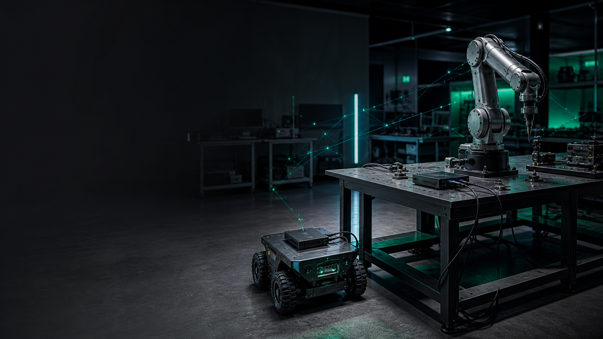
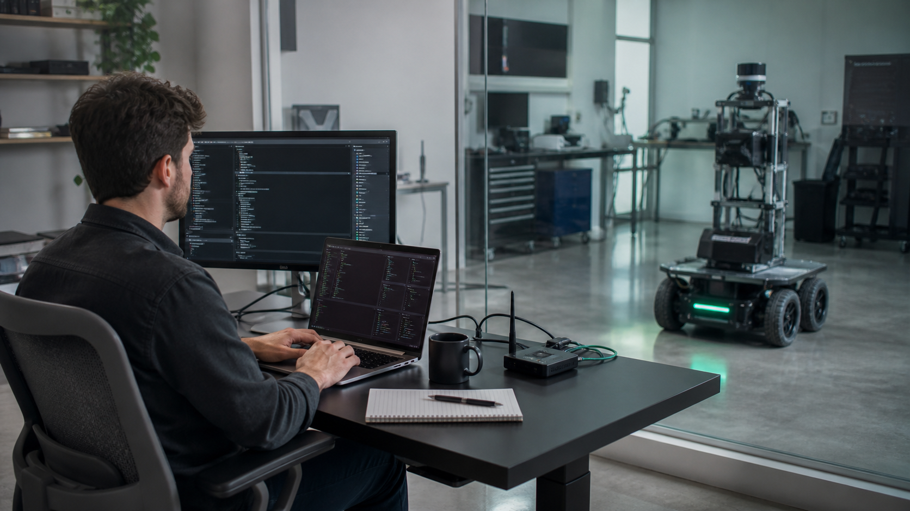

Connect an asset once.
Test it from anywhere.
Developer-first CI and remote test infrastructure for robotics and physical hardware.
Every physical machine should be as easy to test as cloud software.
Bench turns robotics labs from places engineers must visit into infrastructure they can access from anywhere.
Robotics engineers still deploy software by walking to the robot.
Slow iteration
Simple tests become manual, multi-step lab sessions.
Scarce assets
Teams coordinate access through chat, calendars, and tribal knowledge.
No durable history
Commands, state, logs, and results are fragmented across laptops.
Software-heavy robotics teams with shared Linux assets.
shared robots, benches, vehicles, or hardware test systems
person robotics companies growing beyond informal lab coordination
Initial design partner
- Existing deploy and test scripts
- Engineers regularly blocked on hardware access
- Linux compute on or beside the asset
- Need for repeatable integration and smoke tests
- Not ready to build an internal platform team
A control plane for the physical lab.
A small Linux Bench Node stays connected to each asset. Engineers reserve it, deploy a bundle, run tests, stream logs, collect artifacts, and release it.
Keep your existing scripts
No need for a robot OS rewrite
Outbound connection
No inbound lab firewall exposure.
From reservation to persisted result in one workflow.
✓ reserved robot-01
✓ bundle transferred + verified
[stdout] sensors healthy: 6/6
[stdout] localization initialized
PASS
✓ logs and artifacts persisted
Robotics is the beachhead. Physical computing is the category.
Robotics labs
Shared robots and test benches with immediate remote-access pain.
Autonomous systems
Vehicles, drones, logistics, industrial automation, and field hardware.
Hardware CI
The infrastructure layer for testing software against physical machines.
Bottom-up market sizing will be added after design-partner pricing and asset utilization establish a defensible value metric.
The gap is between generic CI and custom internal lab tooling.
Generic CI
Excellent for cloud compute. Cannot reserve, observe, or safely coordinate physical machines.
Device management
Designed to update fleets in production—not orchestrate developer test workflows on scarce assets.
Internal scripts
Flexible but fragmented, hard to discover, and expensive to turn into reliable shared infrastructure.
Bench’s insight: preserve customer scripts while adding the control plane around them.
A working end-to-end prototype exists today.
- Linux node registration and heartbeats
- Atomic asset reservations
- Bundle upload, checksum, transfer, and extraction
- Async stdout and stderr streaming
- Timeout, cancellation, failure, and cleanup paths
- Persisted run history, logs, steps, and artifacts
✓ PostgreSQL + migrations
✓ control plane + node
✓ reservation race rejected
✓ passing workflow
✓ failing workflow + cleanup
✓ timeout + cancellation
✓ artifacts persisted
Land with one lab. Expand with every connected asset.
Paid pilot
One critical workflow, a small set of assets, and measurable cycle-time reduction.
Platform subscription
Workspace fee plus connected assets—the resources Bench makes more available and productive.
Enterprise expansion
Private deployment, SSO, RBAC, retention, audit export, and premium support.
We lived this problem at Anduril.
We repeatedly had to walk over to physical assets, connect locally, load software, run tests, and collect results. We saw firsthand that even a leading robotics company lacked the infrastructure to make physical testing feel like modern CI.
Anish Reddy — Co-founder
Background in distributed systems and core infrastructure at Anduril. Brings the systems experience required to build a reliable control plane for remote physical assets.
Kol Bassuk — Co-founder
Background in optics and laser engineering at Anduril. Brings deep experience working directly with complex physical hardware and the engineers who develop and test it.
Founder-market fit: infrastructure expertise paired with hands-on physical systems engineering.

Raising $5 million to build the infrastructure layer for physical software.
We will invest in engineers, representative robotics hardware, and reliable cloud infrastructure—turning today’s prototype into production infrastructure for real customer labs.
Our next milestone is an aggressive Series A built on repeatable adoption, positioning Bench to serve large robotics and embodied-AI organizations such as Tesla, Boston Dynamics, Anduril, and Google DeepMind.
Anish Reddy & Kol Bassuk · areddy303@gatech.edu · 678-575-1415